The Star Moe Festival Campaign | Meet-Your-Oshis Maid Cafe
Café de Glace
Keito, An Intelligent Cool Maid
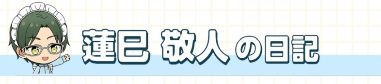
The first day of the Star Moe Festival has ended. I wasn’t sure how it would go, but I think the first day went off without a hitch, thanks to both the fans and the idols working beside me. I want to express my gratitude first and foremost. From here until the festival ends, I will continue to take part without forgetting my original intent to ensure this project’s success. That said, I don’t know about exposing such a silly form of myself to the fans… Is this what it means to be moe…?
| Polaroid | Quote |
|---|---|
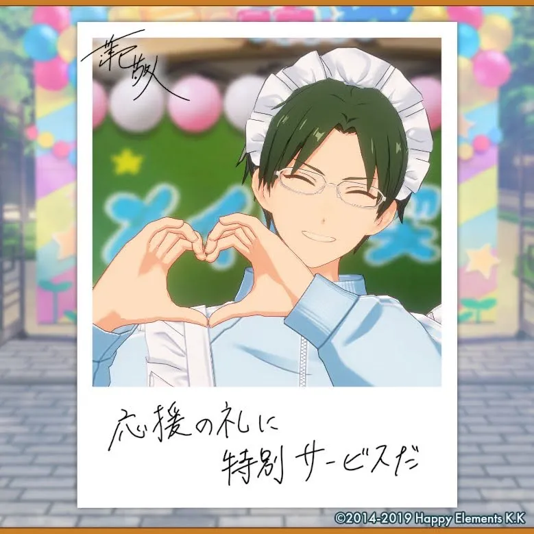 | 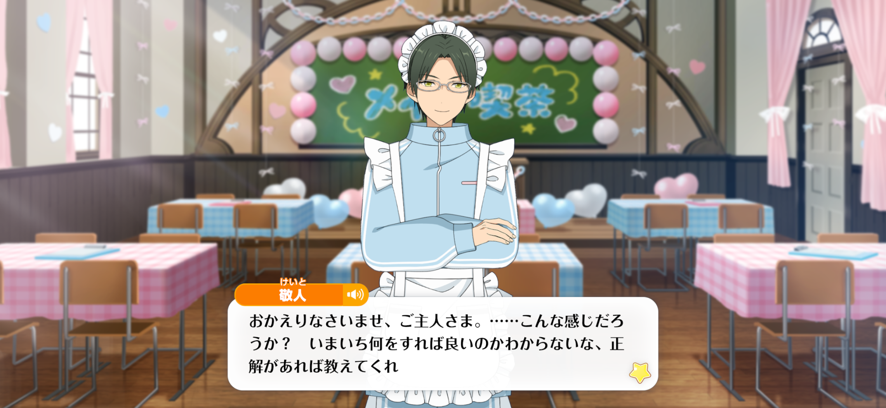 Welcome in, Master... That feels close, right? I don't know if I'm doing it right or doing it wrong. Would you help show me how to improve it? |
Cutesy Wutesy Heart ❤︎
Shinobu, A Pure, Pure ❤︎ Cute Maid
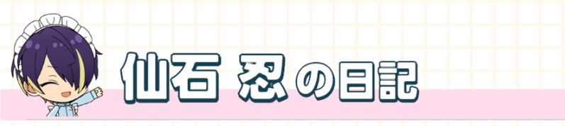
The maid cafe has begun at last! I’m so happy that plenty of customers have come to see us the morning we opened ♪ “Masters” and “Lords”… Serving someone and sensing their needs is something that maids and ninjas have in common, so it seems I can put my experience up to this point to good use ♪ I’ve gotten a little worried about Midori-kun's despondency, though…
| Polaroid | Quote |
|---|---|
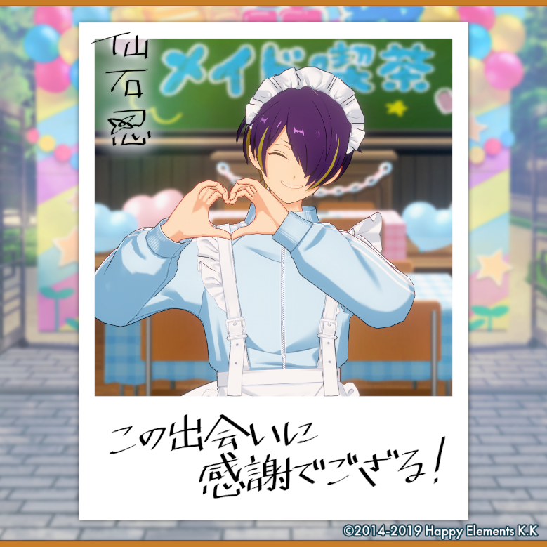 | 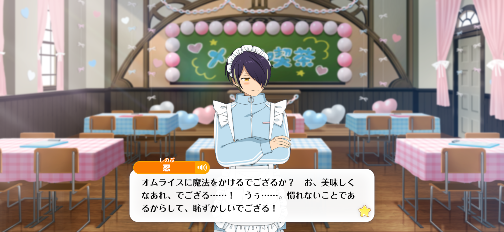 Shall we cast a spell on your omurice?1 Get~ more~ deli~cious...! Uuu.... I'm not used to doing this, it feels embarrassing! |
Midori, A Tsundere ❤︎ Cute Maid
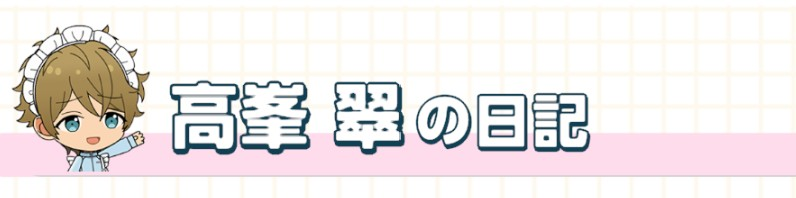
It’s finally started… I don’t know who decided it, but why did I get put with all these cute members…? Uuu, how depressing… I asked Morisawa-senpai if there was some kinda mistake, but he was just like “I have no clue!” Honestly, he needs to take responsibility… I’ve been so nervous about whether I fit in with the cafe, I can’t really remember a single thing that happened today…
Mashu, A Pure, Pure ❤︎ Cute Maid
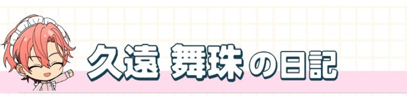
Fun Star Moe Festival: Start ☆ All the Dears were totally looking forward to Mashu’s cute jersey maid look, right? Mashu’s going to talk with all the girls who came today and all the ones who come for the rest of the event, ‘kay? ♪ And naturally, we’re planning to release tons more photos and videos too! Mashu would be pleased as punch if you all would look forward to it ♪ #TheSpringtimeofYouthVibesMightBeTheBest #WelcomeInMaster
Happy Yell
Ibuki, A Fired-Up Energetic Maid
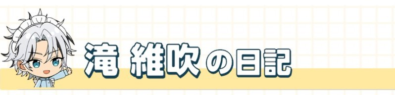
The first day of the Star Moe Festival has ended~♪ I got an explanation about how to serve the customers before the cafe opened, but there was still so much I didn't know so it was very fresh~ I mean, saying stuff like "moe" and "Master" has a real theatrical feel to it, it's so interesting, right~? Kagehira-san said, "as long as you're sincere, it'll all be okay," so I'm gonna put everything I've got into entertaining the masters~♪ I'm looking forward to tomorrow too!
| Polaroid | Quote |
|---|---|
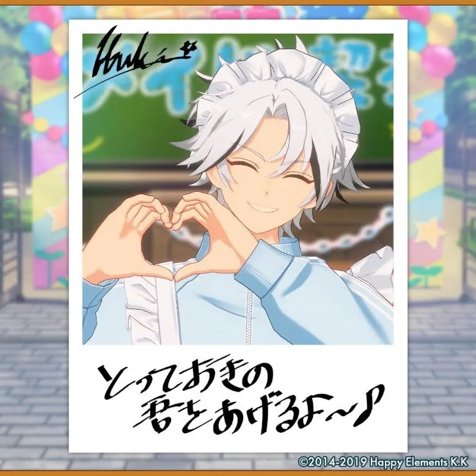 | 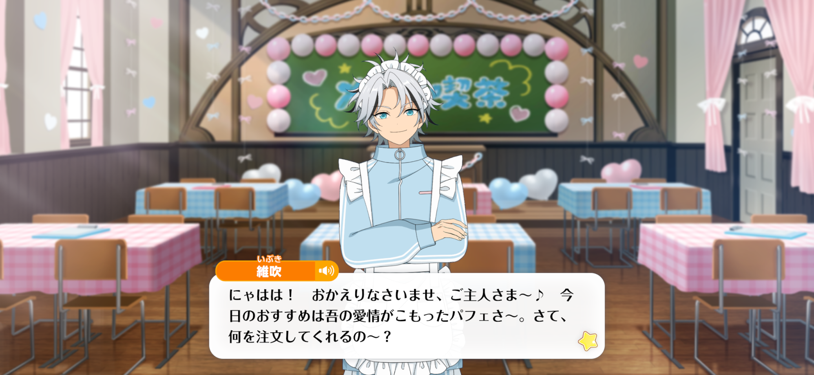 Nyahaha! Welcome in, Master~♪ My recommendedation of the day would be the Made-With-Love Parfait~ Now then, what can I get for you~? |
Chiaki, A Fired-Up Energetic Maid
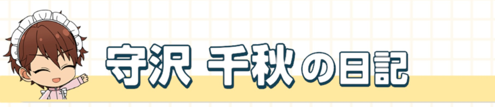
Today begins the Star Moe Festival ★ I’ll give everything I’ve got as a maid to serve our masters properly— because whether I’m a hero or a maid, I’m going to make everyone smile. First, I decided to start practicing giving a nice, loud, “Welcome in!” Both Raika-kun and Tenma-kun were able to give greetings that were just as loud, it was splendid ♪ I’m going to do my best tomorrow onward, starting with the greeting!
Forbidden Honey Trap
Kuro, A Muscular Onii-san Maid
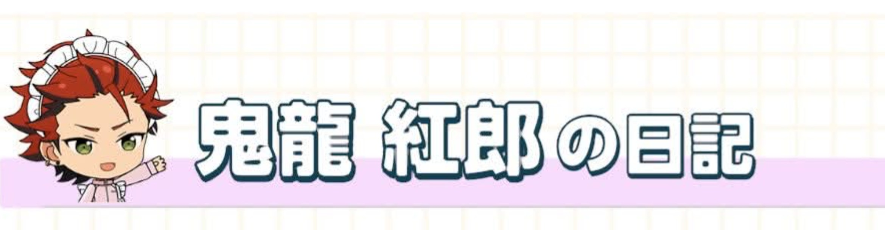
I’ve got no clue what to write in this diary. I didn’t think I was suited for somethin’ like a maid cafe at first, but honestly, talkin’ to customers here ‘n there and showin’ off my food’s got me reconsiderin’ it. I showed Ran how to make some pancakes ‘cuz he asked me to, but he got the hang of it right away. Does that guy have any weak points?
| Polaroid | Quote |
|---|---|
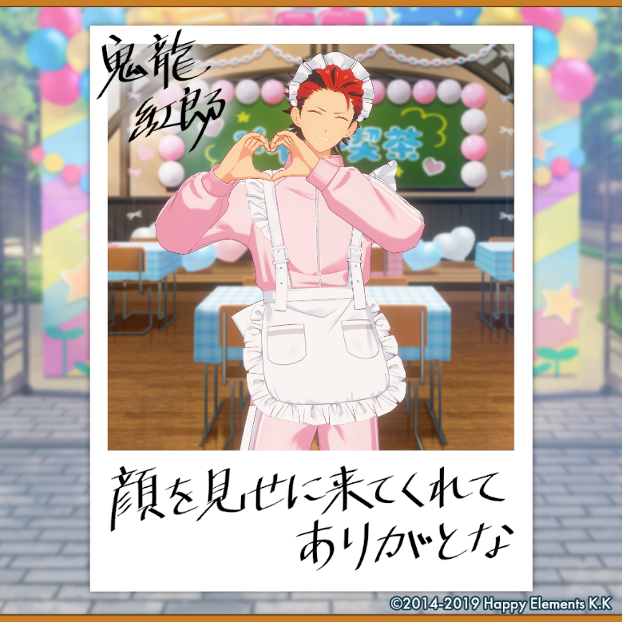 | 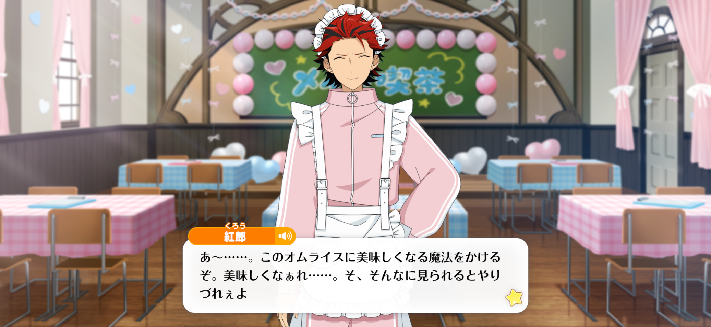 Ah~... Let's make this omurice tasty with some magic, 'kay? Get~ more~ deli~cious...1 H-Hey. It's hard to do when you're lookin' at me like that, y'know. |
Madara, A Muscular Onii-san Maid
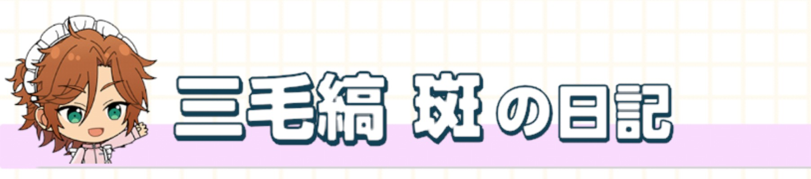
Wasshoi, wasshoi, it’s a festival! It’s a festival! ☆ And so the Star Moe Festival has begun! This time it’s a job of running a cafe and becoming a maid, but it’s sooo interesting, it’s got a way different vibe than anything I’ve done before. I feel like we don’t have many idols in our cafe who look good in a maid outfit, though. Me and Kuro-san have been getting real weird looks while we’ve been trying to call people into our cafe ♪
Tetora, A Muscular Onii-san Maid
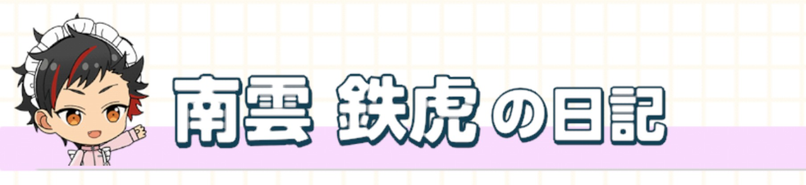
Ossu! The Star Moe Festival’s finally started! Tons of customers have been coming in since the moment we opened, I just gotta be grateful about it ♪ And what’s more, it looks like there’s tons of chances for us idols to treat people with homemade cooking, so I’m gonna unveil my piece de resistance~♪ Even Taishou tried it out for me, so I know it’s good to go! Please look forward to it too, everyone!
Chaos・Chronicle
Kanata, A Unique Unpredictably Natural Maid
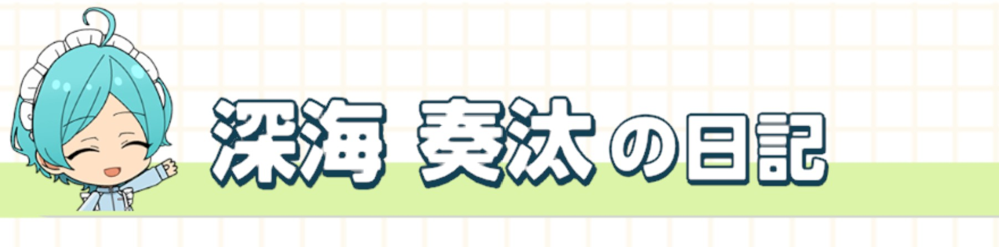
the “star moe festival” has begun, hm~? i have been practicing serving customers just for today, it was very fun~♪ i called people into the cafe with nacchan as well~ i am not used to raising my voice, so i was not sure what to do, but nacchan gave me a “megaphone” to use~♪
Souma, A Unique Unpredictably Natural Maid
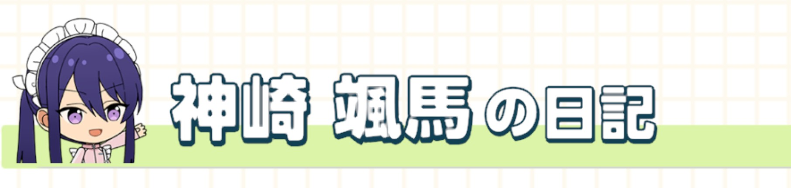
The Star Festival has begun. Festivals never fail to fill my heart with utter joy ♪ And what’s more, I get the opportunity to treat a Lord with my own cooking. I will be preparing fresh fish with the assistance of Shinkai-dono, so it will be a good opportunity to display the fullest extent of my talents. However, when it comes to magic spells being a “staple” of being a maid… I don’t quite know what that is about?
| Polaroid | Quote |
|---|---|
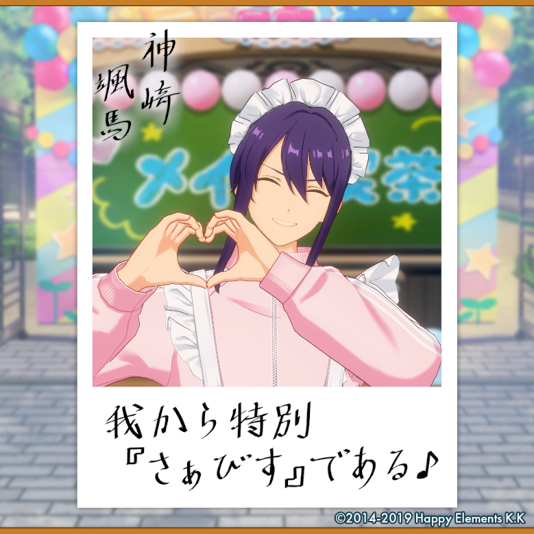 | 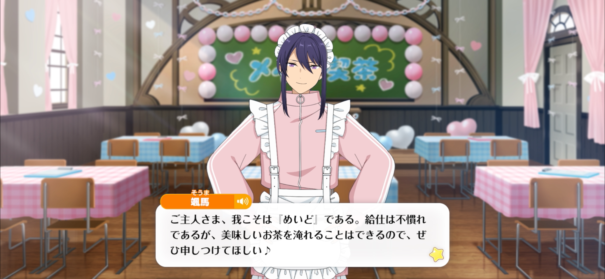 I am none other than a maid, Master. I can't say I am accustomed to serving, but I can prepare a lovely cup of tea, so naturally, please feel free to give me your command ♪ |
Translaton Notes
- ↑ At maid cafes, the maids ask the customer to do a "magical spell" with them to make the food or drink more delicious; you make heart hands, point them at the food lke a beam, "moe moe kyuuun" (萌え萌えキュン); this is what the idols do when you take the polaroids. Some cafes add phrases like "oishikuna~re" (become delicious), which is what Shinobu uses here.